Step 1
Catalog surface
Start with what the requester sees: catalog homepage, categories, top requests, cart, and item detail pages.
A structured guide to the ServiceNow catalog data model: catalog items, variables, cart items, requested items, record producers, multi-row variable answers, UI policies, and cache internals.
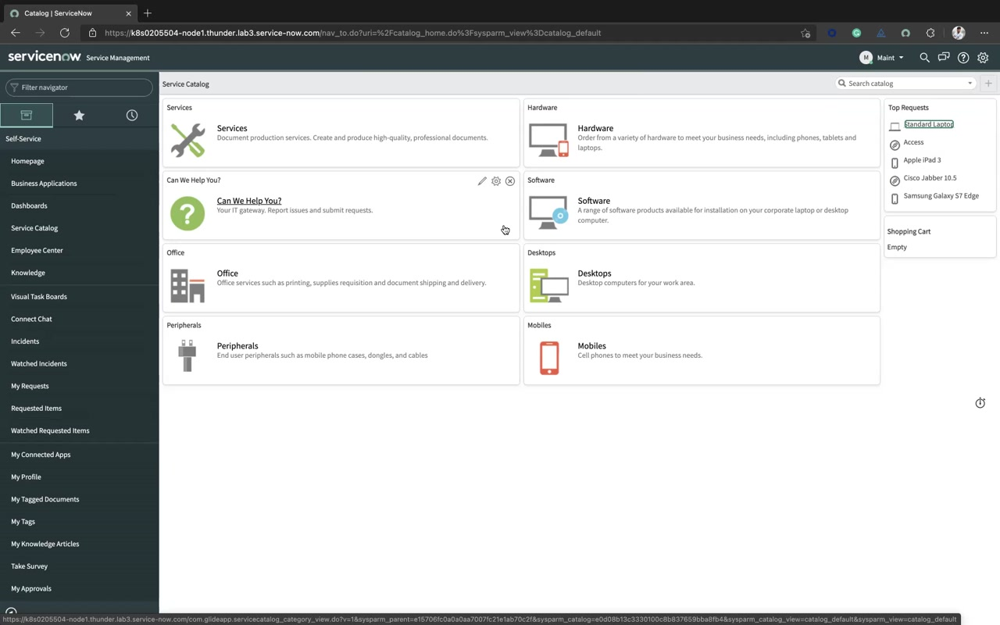
Learning path
The clean mental model is: catalog definition → cart capture → request execution → answer storage → fulfillment → cache refresh.
Start with what the requester sees: catalog homepage, categories, top requests, cart, and item detail pages.
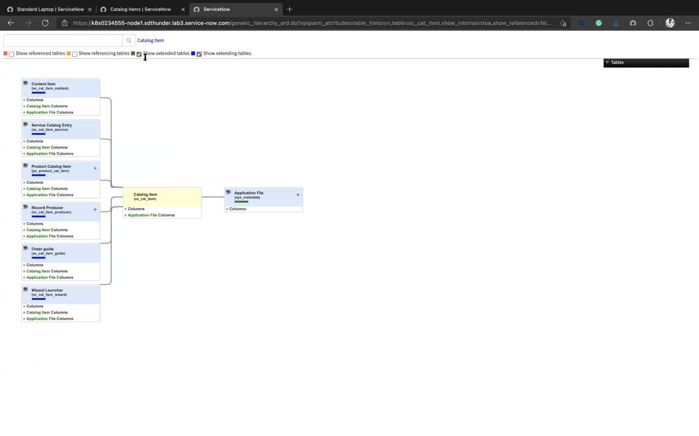
Move behind the UI to `sc_cat_item` and its related/extended tables: normal items, record producers, order guides, content items, and wizards.
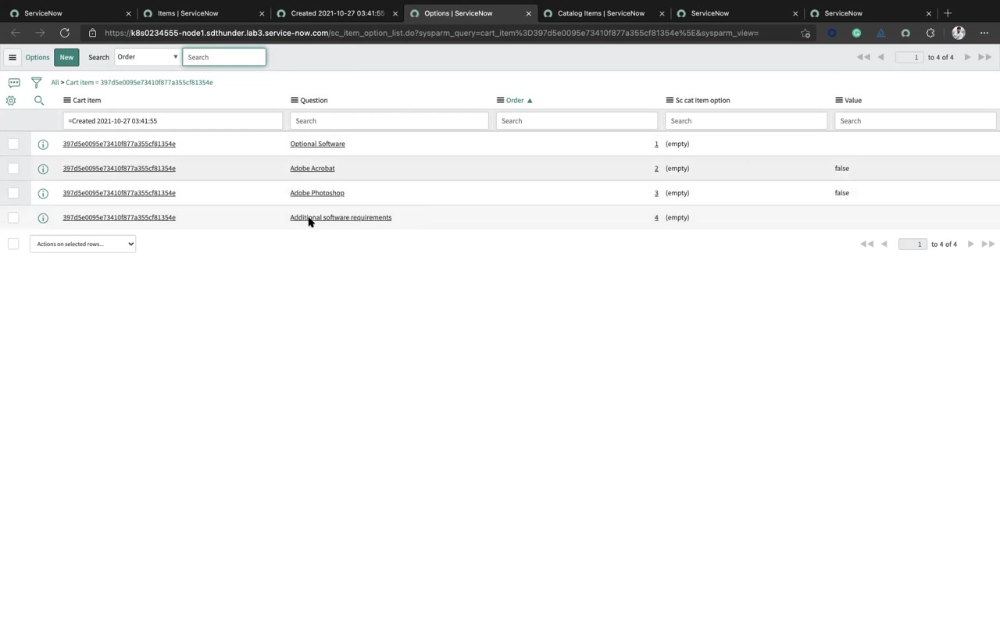
Understand the split between variable definitions and submitted answer rows.
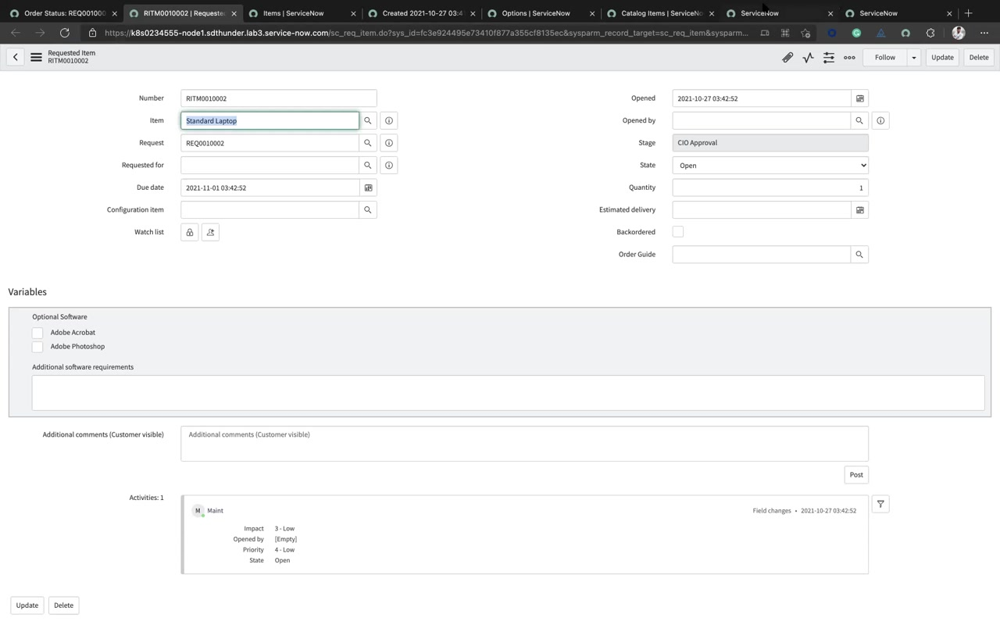
Follow the submitted order into request, requested item, and catalog task records.
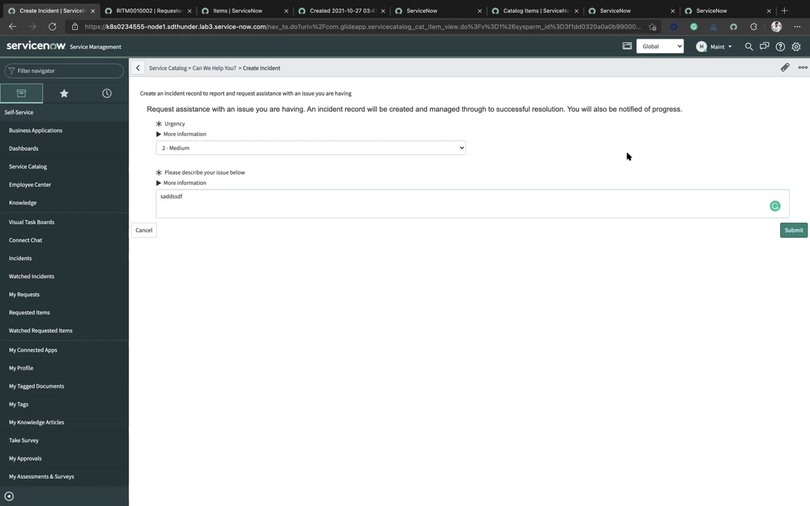
See how catalog inputs can create a non-catalog target record, such as Incident.
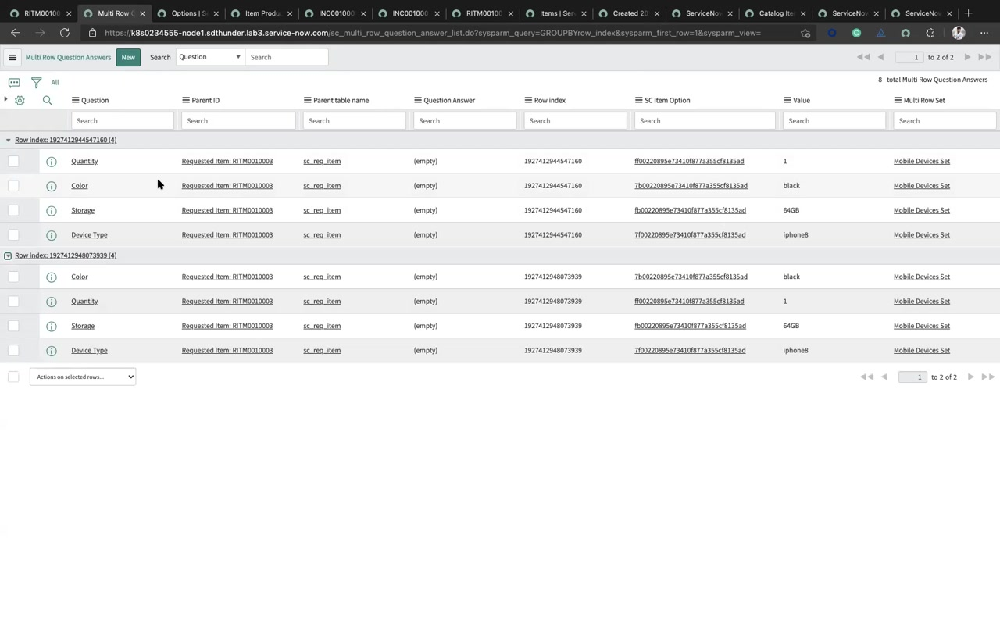
Read multi-row answers as row-index grouped cells rather than a single field.
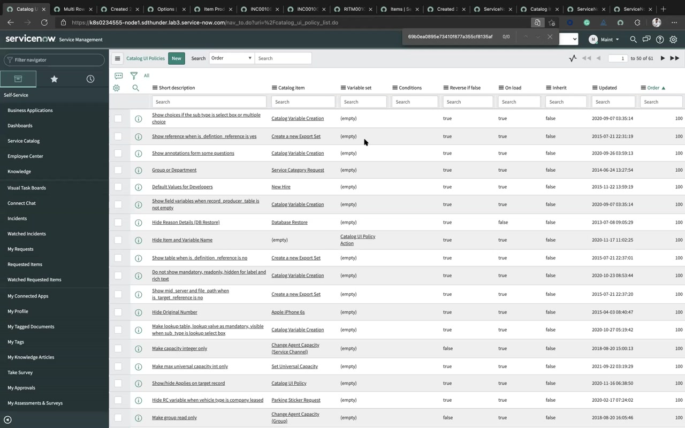
Locate where catalog UI behavior is configured through UI policies and related actions.
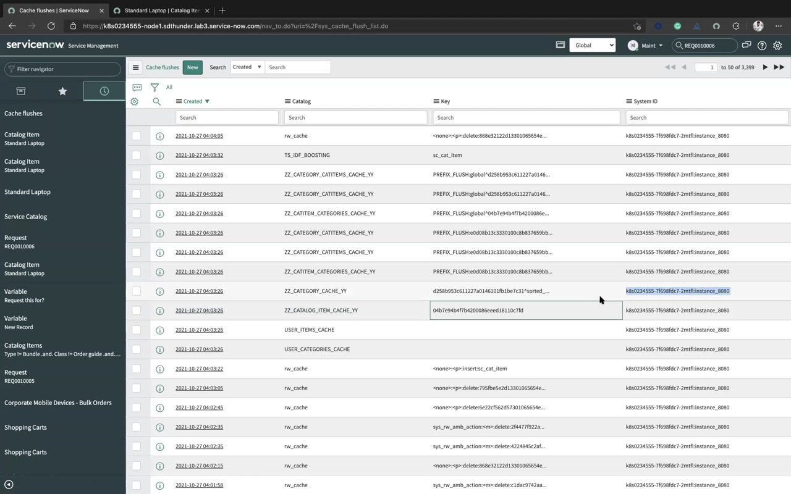
Connect catalog configuration changes to cache flushes and source-level cache classes.
Core model
Do not start by memorizing tables. Start with the lifecycle: define an item, collect variables, submit an order, store answers, create work, then render the result back to the user or fulfiller.
sc_catalogsc_category
sc_cat_item
item / producer / guide
item_option_new
variable sets
sc_cart_itemsc_item_option
sc_requestsc_req_item
sc_task
target record
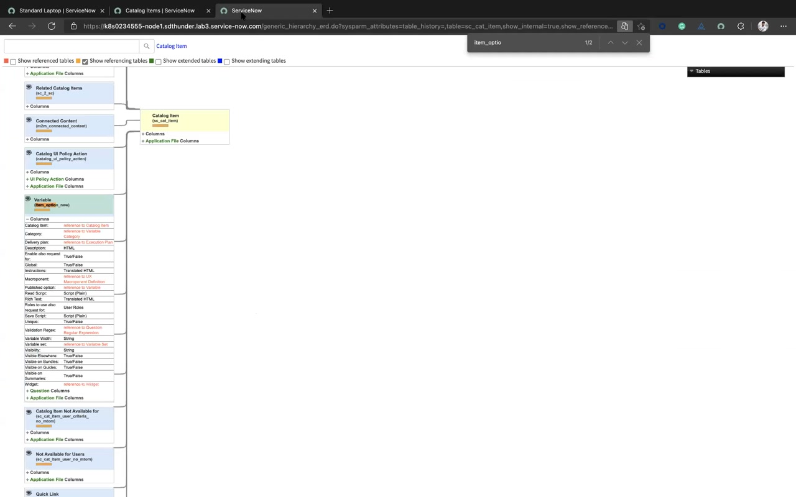
Cheat sheet
| Table / area | Role | How to remember it |
|---|---|---|
| `sc_catalog` | Catalog container | Holds catalogs such as Service Catalog; categories and items belong under it. |
| `sc_category` | Category hierarchy | Groups catalog items; can have a parent category such as Hardware → Tablets. |
| `sc_cat_item` | Base catalog item | Central item table. Normal items, content items, record producers, order guides, and wizard items are connected to this model. |
| `sc_cat_item_category` / related category M2M | Item-category link | Connects catalog items to categories so they appear in the right catalog location. |
| `item_option_new` | Variable definition | Defines catalog questions/variables: type, question text, name, order, catalog item, variable set, reference, default, and visibility rules. |
| Variable set tables | Variable grouping | Reusable sets of variables; multi-row variable sets become table-like inputs. |
| `sc_cart_item` | Pre-checkout cart row | Represents an item in the shopping cart before checkout. |
| `sc_item_option` | Submitted answer value | Stores each variable answer row, including question reference, value, order, and catalog option metadata. |
| `sc_item_option_mtom` | RITM-to-option join | Links requested items to the answer option rows. |
| `sc_request` | Request container | The overall order/request that can contain one or more requested items. |
| `sc_req_item` | Requested item / RITM | The ordered item instance with lifecycle fields such as stage, state, quantity, and item reference. |
| `sc_task` | Fulfillment task | Work record created to fulfill the requested item. |
| `question_answer` | Record producer answers | Stores answers captured by record producers against the produced target record/table. |
| `item_produced_record` | Producer-output mapping | Maps the record producer to the target record/task it created. |
| `sc_multi_row_question_answer` | MRVS/table-variable storage | Stores each cell of a multi-row variable set; rows are reconstructed using `row_index`. |
| `catalog_ui_policy` / actions | Catalog form behavior | Controls visibility, mandatory, readonly, and dynamic behavior of variables. |
| `sys_cache_flush` + catalog caches | Cache invalidation | Shows catalog/cache entries invalidated when item/category/configuration data changes. |
Demo walkthrough
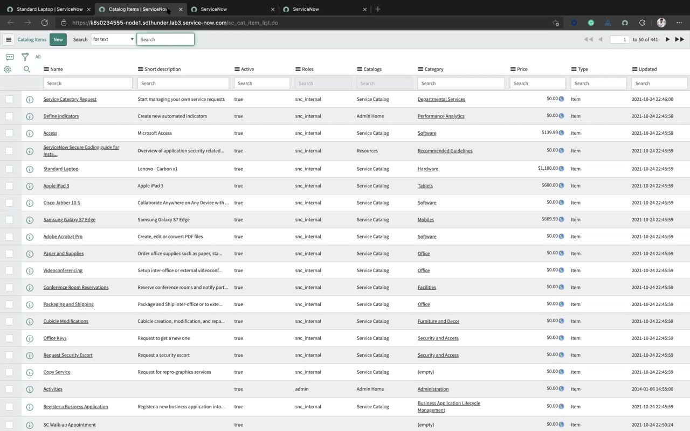
The Catalog Items list proves that the catalog homepage is backed by item records. The demo filters and opens records such as Standard Laptop.
Each variable answer becomes an option row. This is why variable data is not just another column directly on the RITM.
The requested item renders stored variables in a human-friendly Variables section while preserving item/request lifecycle fields.
A record producer collects variables like a catalog item, but it creates a target task/record such as Incident.
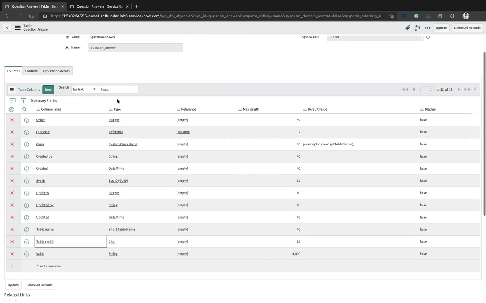
For record producers, variable answers are stored against the produced table and sys_id through Question Answer.
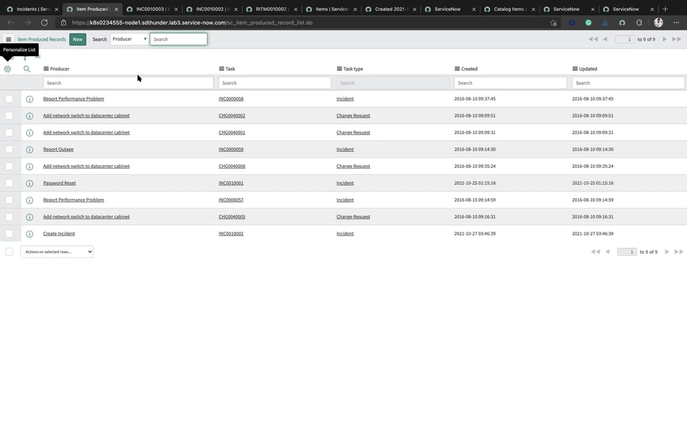
Item Produced Records links the producer to the record it created.
Multi-row variable set values are not stored as one JSON blob in the demo; each cell appears as a row grouped by row index.
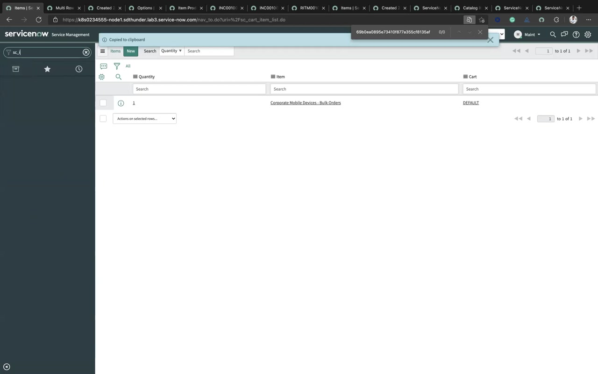
Cart item rows and option rows are visible before/around checkout, while request/RITM/task records carry the execution flow.
Catalog UI Policies are where dynamic variable behavior is configured.
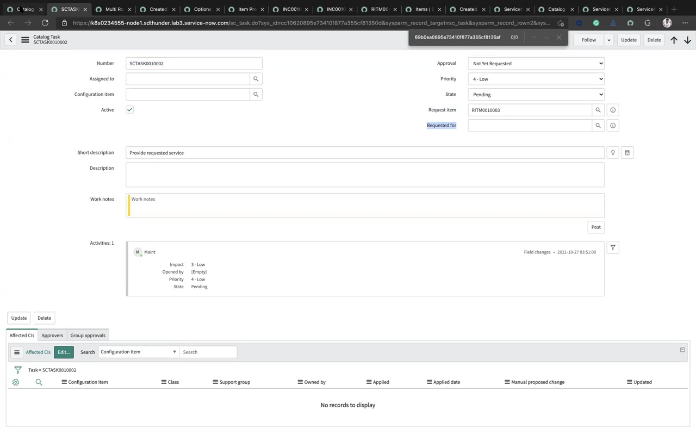
Catalog Task shows how the requested item becomes work for a fulfillment team.
Storage patterns
sc_cat_item defines the item. item_option_new defines variables. During ordering, sc_cart_item and sc_item_option hold item/answer data. After checkout, the request is represented by sc_request and sc_req_item.
The user fills a catalog-like form, but the output is a target task/table record. The demo shows Create Incident, the Incident Variable Editor, question_answer, and item_produced_record.
The visible grid is reconstructed from rows in sc_multi_row_question_answer. Same row_index means the cells belong to the same logical table row.
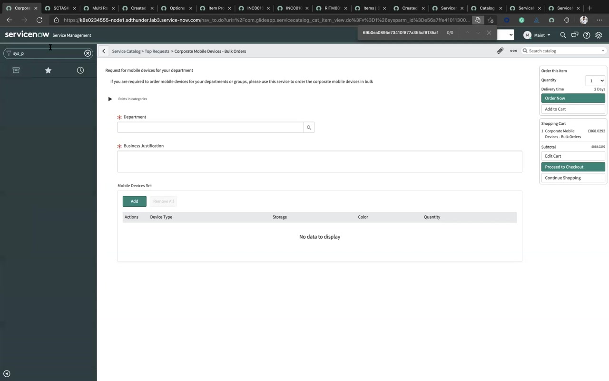
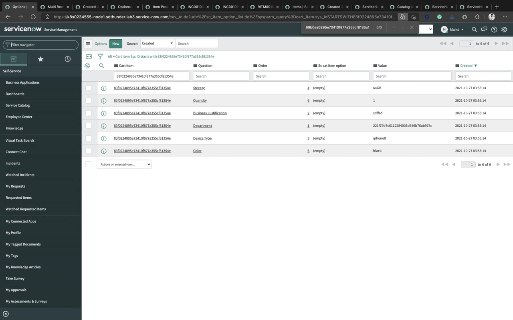
Advanced internals
Catalog rendering depends on category, item, criteria, question, UI policy, and variable metadata. The code/cache portion explains why changing catalog configuration often triggers catalog cache invalidation.
Category membership and item visibility are cached so the catalog homepage loads quickly.
Question, choice, and regex metadata are cached because every catalog item render needs variable definitions.
When certain tables update, the listener/finder logic determines which cached catalog data should expire.
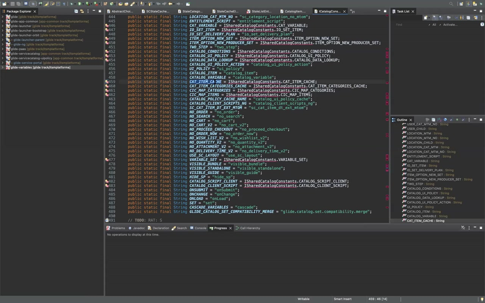
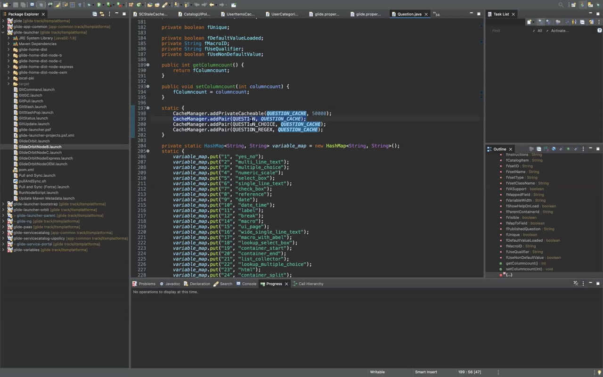
Configuration views
The demo also shows category membership and the guided Catalog Item Builder/Wizard path.
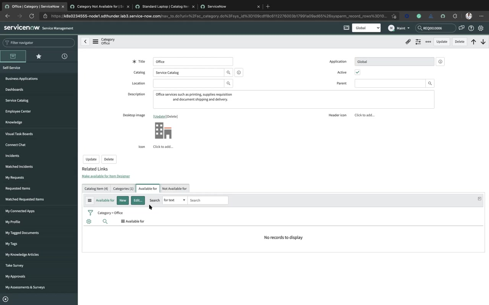
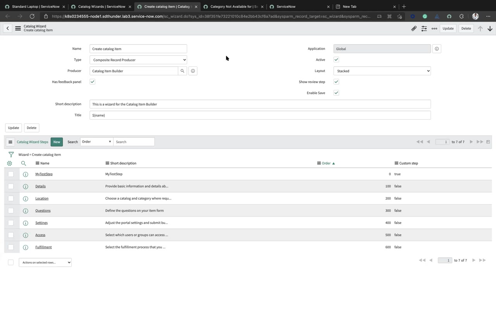
Practice
A user submits Standard Laptop with two software checkboxes. Which tables would you inspect to find the item, RITM, and answers?
Answer: sc_cat_item, sc_req_item, sc_item_option, and usually sc_item_option_mtom.
A record producer creates an Incident. Why might the answers not be on sc_req_item?
Answer: Record producers create target records; answers can be traced through question_answer and item_produced_record.
In MRVS, why do several records have the same row index?
Answer: Each record is one cell; same row index groups cells into one logical table row.